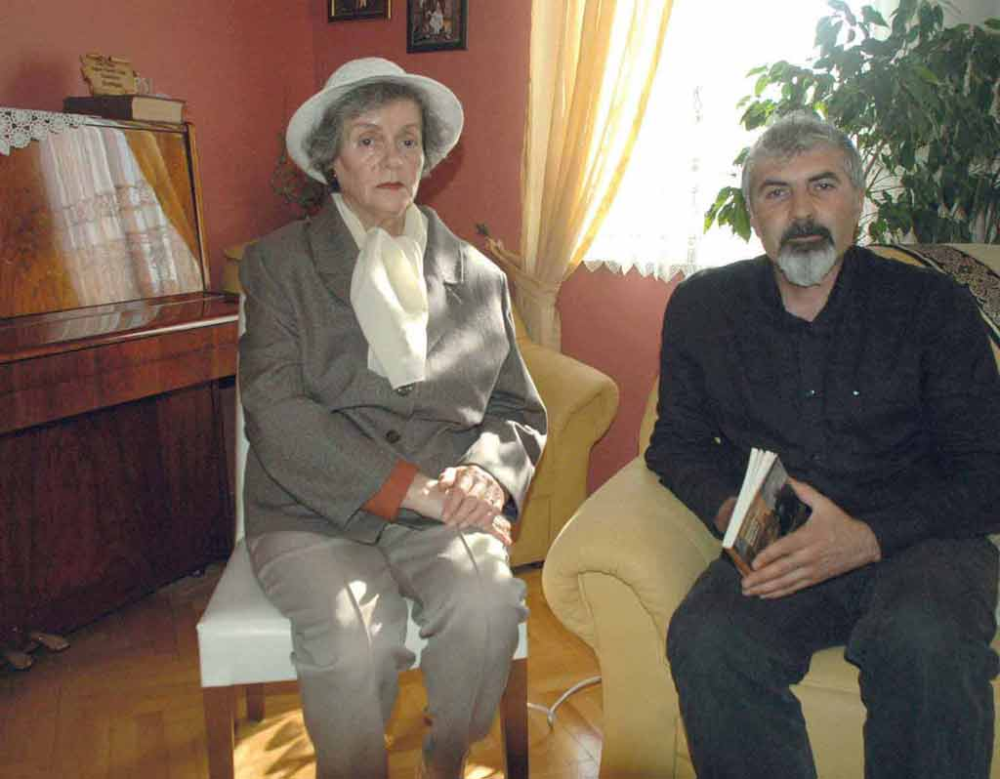

Nermin Sali Nalbant (Koçoğlu), Güney Özkılınç (2011)
Beklenen gün, gelip çatmıştır. Bulgaristan Komünist Partisi müthiş bir koruma önlemi almıştır. Genç kızların yürekleri kıpır kıpırdır. Şairin rahatsızlığı yetkilileri tedirgin etmekte, bu nedenle parti, Nâzım’a karanfil verilmesine şiddetle karşı çıkmaktadır. Lise müdürü Kadir Ahmet, Bulgar aydınları ve öğrencileri ile Bulgaristan’da yaşayan Türklerin huzurunda, bu çiçeklerin Nâzım Hikmet’e mutlaka verilmesi gerektiğini belirterek noktayı koyar: “Bu karanfiller, gururumuz olan büyük insana verilecek...” Nermin Sali, o günü ve yaşadıklarını şöyle anlatıyor: “Tarihi karşılaşma için heyecanla hazırlanıyorduk. Onun şiirlerinden oluşan bir de dinleti hazırlamıştık. Rusçuk’ta çok büyük ve güzel bir kültür sarayı vardı. Yüzlerce insan yerlerini almıştı. Ben, elli yedi kırmızı karanfilden oluşan bir buketle girdim. Sahnede, Nâzım Hikmet’e büyük bir saygıyla bakan ünlü Bulgar şairleri Dora Gabe, Elisaveta Bagrâna ile Romanya Kültür Bakanlığından bir komisyonu vardı.
Elli yılı geçti ama ben sahnedekilerin sayısını bile bugün gibi hatırlıyorum. Yirmi beş kişiydiler... Yakışıklı, iri, nazik, sarışın dalgalı saçlı, mavi gözlü Nâzım Hikmet konuşmasına başlamak üzereydi. Salonda ilk sırada Nâzım’ın Rus doktoru oturuyordu.
Ben, her şeye rağmen okul üniformamla iç basamaklardan sahneye çıktım ve onun yanına geldim. Ona, ‘Kıymetli Nâzım Hikmet yoldaş!’ dediğimde bana döndü, kucakladı, öptü ve ‘Ah ah benim Memet’im şimdi nerelerde, neler yapıyor? Çok mutluyum, sizleri çok seviyorum...’ dedi.
Baktım, benzi solmuş, heyecan dolu bir hasta kalple acaba şimdi yere yığılıp fenalaşacak mı, diye düşündüm. Ne yaparız? Zaten ona çiçek vermemizi de yasaklamışlardı...
Sözünü bitirdikten sonra Nâzım Hikmet’e çiçekleri uzattım. O, cebinden çıkardığı küçük bir bıçakla karanfilleri birbirinden ayırdı ve benden onları toplantıdakilere dağıtmamı rica etti.
Ertesi gün arkadaşları ile okulumuza ve kaldığımız yurda geldi. O kadar Türk kızını bir arada görünce gözyaşlarını tutamadı. Okulun edebiyat kulübü, heyecanla Nâzım Hikmet’in şiirlerini okudu, şarkılar söyledi. Tanıdık bir esnaftan aldığımız Türk sırmalı takım elbiseyi tüm öğrenciler adına ona sundum. O, şimdi Rusya’da Nâzım’ın müzesinde korunuyor.
Nâzım Hikmet de bize kendi el yazısı ve kara kalemi ile üzerinde ‘Bu küçük hediyeyi, size bir hasta Türk şairi ve yazarı hediye ederken hiçbir zaman hastalanmamanızı diliyor. Haziran-1957, Rusçuk-Bulgaristan’ yazılı büyük bir ilaç kutusu hediye etti.
Nâzım Hikmet ertesi gün Rusçuk’tan Vidin’e, oradaki Türklerle karşılaşmaya gidecekti. Ben de aynı vaporla doğduğum Dolni Tsibar limanına tatile gidecektim. Vaporun güvertesinde yeniden Nâzım’la karşılaştık. Bana hayatından çok şey anlattı. Mehmet’in adını anarken gözleri yaşla doluyordu. Türkiye’yi çok özlediğini, ülkesinin insanlarının iyi yaşamasını gönülden istediğini söylemişti...”
Nâzım Hikmet’in bu yolculuktan neredeyse tam bir yıl sonra 1 Haziran 1958’de yazdığı “Tuna Üstüne Söylenmiştir” şiirinde hem Tuna hem memleket hem de Memet, hasretle serpilir dizelere...
Nâzım, sevgi dolu bir öpücük bırakarak vedalaşır genç kızla. Öyle bir öpücük ki tazeliği elli yıl kalır Sali’nin yanaklarında...
Nermin Sali, sonraki yıllarda Sofya Devlet Üniversitesi Kimya Öğretmenliği’ni bitirir. Kırcaali yakınlarında bulunan Eğridere’de uzun yıllar öğretmenlik yapar...
...
Nermin Sali, 1995 yılında bir daha geri dönmemek üzere Türkiye’ye gelir. Nâzım’ın on bir yıla yakın hapis yattığı Bursa’ya yerleşir. Nâzım’dan bir iz arar. Hep “Sofya’dan” şiiridir dilinin ucundakiler, şairin izini sürdüğü tüm bu yıllarda:
“...
Sofya şehri, büyük mü?
Şehirler, gülüm, caddeleriyle değil,
anıtını diktiği şairleriyle büyük oluyor,
Sofya büyük bir şehir...”
“Ya Bursa?” diye düşünür Sali. Nâzım’ın düşündüğü gibi... Hepimizin düşündüğü gibi... Ya Bursa?
(Nâzım Hikmet, Yeni Şiirler, s. 123)